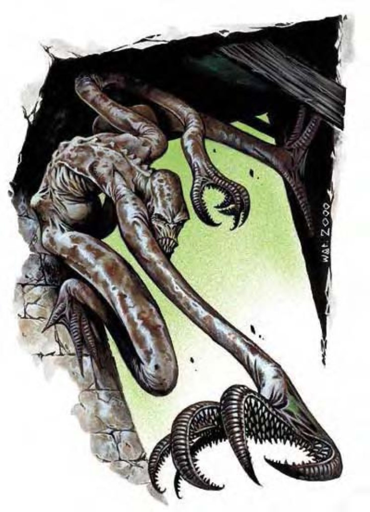

| 生命骰： | 3d8+3（16hp） |
| 先攻： | +6 |
| 速度： | 20英尺（4格），攀爬10英尺 |
| 防御等级： | 17（+1体型，+2敏捷，+4天生），接触13，措手不及15 |
| 基本攻击/擒抱： | +2/+5 |
| 攻击： | 卷须+6近战（1d3+3） |
| 全回合攻击： | 2卷须+6近战（1d3+3） |
| 占据/触及： | 5英尺/10英尺 |
| 特殊攻击： | 精通攫抓，紧勒1d3+3 |
| 特殊能力： | 黑暗视觉60英尺，迅捷 |
| 豁免： | 强韧+2，反射+5，意志+4 |
| 属性： | 力量16，敏捷14，体质13，智力4，感知13，魅力7 |
| 技能： | 攀爬+13，躲藏+10，潜行+6 |
| 专长： | 精通先攻B，闪电反射，隐秘 |
| 区域： | 地底 |
| 组织： | 单独 |
| 挑战等级： | 2 |
| 宝物： | 1/10钱币；50%商品；50%物品 |
| 阵营： | 通常混乱邪恶 |
| 进化： | 4-6HD（小型）；7-12HD（中型） |
| 等级调整： | - |
他栖息于房间角落顶部的阴影中。躯体像裸身的半身人，皮肤长满斑点，四肢惊人地细长。该生物发出嘶嘶声，露出尖锐的牙齿，随即鞭子似地甩出四肢攻击。
这些邪恶的小型掠食者潜伏在地底，抓住任何碰巧从眼前经过的猎物。
锁喉怪的头部、背脊和胸部削瘦露出骨头，但四肢如触手般有着多重软骨关节。也因此，其四肢略显弓形，移动有独特的流畅性。它的手脚长有带刺的肉垫，使其几乎能够抓住任何表面。它的体重约有35磅。
锁喉怪说地底通用语。
战斗锁喉怪喜欢躲在天花板，通常是在房梁交接处、拱门、水井或坏死楼梯间附近，由上而下攻击它的猎物。
锁喉怪几乎能够攻击任何体型的生物，但它比较喜欢攻击相似体型或更大一级的落单猎物。若是在极为饥饿的情况下，它可能攻击一群生物，但会等着抓取排在队伍最后的那个。
锁喉怪非常贪婪。脑筋快的冒险者若事先发现锁喉-怪，可尝试在其攻击前以食物贿赂，打听附近的消息。
紧勒Constrict（Ex）：锁喉怪在对付大型或更小的生物时，一旦通过擒抱检定，就可造成1d3+3的伤害。由于它抓住了受害者的脖子，因此被锁喉怪抓住的生物既无法说话，也不能施展含有言语成分的法术。
精通攫抓Improved Grab（Ex）：如需使用这一能力，锁喉怪必须用卷须攻击成功命中一名大型或更小体型的生物。随后，它可以尝试以一个自由动作发动擒抱，这一动作不会引发借机攻击。如果它从擒抱检定中胜出，它将就此建立控制并可以发动紧勒。
迅捷Quickness（Su）：虽然并非特别敏捷，锁喉怪的动作异乎寻常的快速。它在每轮都可以进行一个额外的标准或是移动动作。
技能：锁喉怪在攀爬检定上有+8种族加值并总是可以选择取10，即使是在匆忙或是被威胁的情况下。